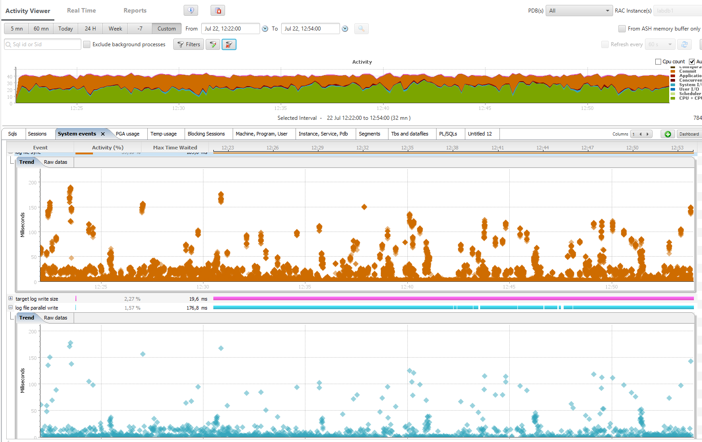

On the Oracle Database Appliance, the redo logs are on Flash storage (and with X6 everything is on Flash storage) so you may wonder if we can benefit from 4k redo blocksize. Here are some tests about it on an ODA X6-2M. I’ll compare the same workload (heavy inserts) with 512 bytes and 4k bytes block size redo. However, we can’t create a log group different than 512 bytes:
ORA-01378: The logical block size (4096) of file /u03/app/oracle/redo/LABDB1/onlinelog/o1_mf_999_%u_.log is not compatible with the disk sector size (media sector size is 512 and host sector size is 512)
This is because the flash storage is exposed with 512 bytes sector size:
ASMCMD> lsdg State Type Rebal Sector Block AU Total_MB Free_MB Req_mir_free_MB Usable_file_MB Offline_disks Voting_files Name MOUNTED NORMAL N 512 4096 4194304 4894016 4500068 2441888 1023992 0 Y DATA/ MOUNTED NORMAL N 512 4096 4194304 1231176 221172 610468 -199762 0 N RECO/
Then, in order to be able to create new redo log groups with higher block size you need to set “_disk_sector_size_override” to TRUE;
I have 3 log groups with 512 bytes block size, and 3 groups with 4k:
LOGFILE GROUP 10 '+RECO/LABDB1/ONLINELOG/group_10.264.917867333' SIZE 51200M BLOCKSIZE 512, GROUP 11 '+RECO/LABDB1/ONLINELOG/group_11.265.917867489' SIZE 51200M BLOCKSIZE 512, GROUP 12 '+RECO/LABDB1/ONLINELOG/group_12.266.917867645' SIZE 51200M BLOCKSIZE 512, GROUP 13 '+RECO/LABDB1/ONLINELOG/group_13.267.917867795' SIZE 51200M BLOCKSIZE 4096, GROUP 14 '+RECO/LABDB1/ONLINELOG/group_14.268.917867913' SIZE 51200M BLOCKSIZE 4096, GROUP 15 '+RECO/LABDB1/ONLINELOG/group_15.269.917868013' SIZE 51200M BLOCKSIZE 4096
In 12c the database files should be on ACFS and not directly on the diskgroup. We did this on purpose in order to check if there is any overhead when in ACFS and we have seen exactly the same performance in both. There is something I dislike here however: redo log files are not multiplexed with multiple log members, but rely on the diskgroup redundancy. I agree with that in ASM because you are not supposed to manage the files and then risk to delete one of them. But in ACFS you see only one file, and if you drop it by mistake, both mirrors are lost, with the latest transactions.
On an insert intensive workload I take AWR snapshots between two log switches:
 The switch between blocksize 512 and blocksize 4096 happened at 12:35
{kind=link}
Don’t be nervous about those orange ‘log file sync waits’ we had to run 10000 transactions per second in order to get some contention here.
We have to go to the details in order to compare, from an AWR Diff report:
Workload Comparison
~~~~~~~~~~~~~~~~~~~ 1st Per Sec 2nd Per Sec %Diff
--------------- --------------- ------
DB time: 37.9 37.3 -1.4
CPU time: 19.0 24.4 28.4
Background CPU time: 0.8 1.0 23.2
Redo size (bytes): 61,829,138.5 76,420,493.9 23.6
Logical read (blocks): 1,181,178.7 1,458,915.9 23.5
Block changes: 360,883.0 445,770.8 23.5
Physical read (blocks): 0.4 1.1 164.3
Physical write (blocks): 14,451.2 16,092.4 11.4
Read IO requests: 0.4 1.1 164.3
Write IO requests: 9,829.4 10,352.3 5.3
Read IO (MB): 0.0 0.0 100.0
Write IO (MB): 112.9 125.7 11.4
IM scan rows: 0.0 0.0 0.0
Session Logical Read IM:
User calls: 8,376.0 10,341.2 23.5
Parses (SQL): 5,056.0 6,247.8 23.6
Hard parses (SQL): 0.0 0.0 0.0
SQL Work Area (MB): 3.1 3.2 3.5
Logons: 0.4 0.3 -37.2
Executes (SQL): 225,554.2 278,329.3 23.4
Transactions: 10,911.0 13,486.4 23.6
The second workload, when redo blocksize was 4k, was able to handle 23% more activity.
‘log file sync’ average time is 1.3 milliseconds instead of 2.4:
Top Timed Events First DB/Inst: LABDB1/labdb1 Snaps: 155-156 (Elapsed time: 301.556 sec DB time: 11417.12 sec), Second DB/Inst: LABDB1/labdb1 Snaps: 157-158 (Elapsed time: 301.927 sec DB time: 11269.1 sec)
-> Events with a "-" did not make the Top list in this set of snapshots, but are displayed for comparison purposes
1st 2nd
------------------------------------------------------------------------------------------------ ------------------------------------------------------------------------------------------------
Event Wait Class Waits Time(s) Avg Time(ms) %DB time Event Wait Class Waits Time(s) Avg Time(ms) %DB time
------------------------------ ------------- ------------ ------------ ------------- ----------- ------------------------------ ------------- ------------ ------------ ------------- -----------
CPU time N/A 5,722.8 N/A 50.1 CPU time N/A 7,358.4 N/A 65.3
log file sync Commit 2,288,655 5,412.1 2.4 47.4 log file sync Commit 2,808,036 3,535.5 1.3 31.4
target log write size Other 363,206 283.7 0.8 2.5 target log write size Other 644,287 278.2 0.4 2.5
log file parallel write System I/O 368,063 225.1 0.6 2.0 enq: TX - row lock contention Application 171,485 170.2 1.0 1.5
db file parallel write System I/O 12,399 160.2 12.9 1.4 db file parallel write System I/O 12,131 150.4 12.4 1.3
enq: TX - row lock contention Application 144,822 133.2 0.9 1.2 log file parallel write System I/O 649,501 148.1 0.2 1.3
library cache: mutex X Concurrency 130,800 120.8 0.9 1.1 library cache: mutex X Concurrency 86,632 128.1 1.5 1.1
log file sequential read System I/O 7,433 27.5 3.7 0.2 LGWR wait for redo copy Other 478,350 45.1 0.1 0.4
LGWR wait for redo copy Other 228,643 20.8 0.1 0.2 log file sequential read System I/O 6,577 21.7 3.3 0.2
buffer busy waits Concurrency 261,348 15.8 0.1 0.1 buffer busy waits Concurrency 295,880 20.1 0.1 0.2
--------------------------------------------------------------------------------------------------------------------
We see that this difference comes from lower latency in ‘log file parallel write':
Wait Events First DB/Inst: LABDB1/labdb1 Snaps: 155-156 (Elapsed time: 301.556 sec DB time: 11417.12 sec), Second DB/Inst: LABDB1/labdb1 Snaps: 157-158 (Elapsed time: 301.927 sec DB time: 11269.1 sec)
-> Ordered by absolute value of 'Diff' column of '% of DB time' descending (idle events last)
# Waits/sec (Elapsed Time) Total Wait Time (sec) Avg Wait Time (ms)
---------------------------------------- ---------------------------------------- -------------------------------------------
Event Wait Class 1st 2nd %Diff 1st 2nd %Diff 1st 2nd %Diff
------------------------------ ------------- -------------- -------------- ---------- -------------- -------------- ---------- --------------- --------------- -----------
log file sync Commit 7,589.5 9,300.4 22.5 5,412.1 3,535.5 -34.7 2.36 1.26 -46.61
log file parallel write System I/O 1,220.5 2,151.2 76.2 225.1 148.1 -34.2 0.61 0.23 -62.30
enq: TX - row lock contention Application 480.2 568.0 18.3 133.2 170.2 27.8 0.92 0.99 7.61
LGWR wait for redo copy Other 758.2 1,584.3 109.0 20.8 45.1 117.1 0.09 0.09 0.00
library cache: mutex X Concurrency 433.8 286.9 -33.8 120.8 128.1 6.0 0.92 1.48 60.87
db file parallel write System I/O 41.1 40.2 -2.3 160.2 150.4 -6.2 12.92 12.40 -4.02
cursor: pin S Concurrency 29.7 46.0 55.0 9.9 16.6 67.0 1.11 1.19 7.21
cursor: mutex X Concurrency 7.0 10.8 54.2 13.6 19.7 45.0 6.39 6.01 -5.95
latch: In memory undo latch Concurrency 585.3 749.0 28.0 10.8 16.3 50.8 0.06 0.07 16.67
In order to go into details, here is the wait event histogram for 512 bytes redo blocksize:
% of Waits
-----------------------------------------------
Total
Event Waits <1ms <2ms <4ms <8ms <16ms <32ms 1s
------------------------- ------ ----- ----- ----- ----- ----- ----- ----- -----
LGWR all worker groups 41 48.8 12.2 14.6 14.6 4.9 2.4 2.4
LGWR any worker group 259 6.2 5.4 8.9 13.9 18.1 18.1 29.3
LGWR wait for redo copy 228.9K 99.1 .9 .0
LGWR worker group orderin 442 44.6 9.7 4.5 5.0 9.3 10.6 16.3
log file parallel write 368.5K 85.3 7.5 4.7 1.4 .9 .2 .0
log file sequential read 7358 6.5 13.1 59.0 17.2 3.0 1.1 .2
log file sync 2.3M 48.9 23.1 17.0 5.7 2.7 2.3 .3
and for 4096 bytes blocksize:
% of Waits
-----------------------------------------------
Total
Event Waits <1ms <2ms <4ms <8ms <16ms <32ms 1s
------------------------- ------ ----- ----- ----- ----- ----- ----- ----- -----
LGWR all worker groups 20 45.0 5.0 15.0 10.0 5.0 20.0
LGWR any worker group 235 7.2 3.0 5.5 7.7 14.5 25.1 37.0
LGWR wait for redo copy 478.7K 98.9 1.0 .1 .0
LGWR worker group orderin 517 51.3 9.7 2.3 2.9 7.2 11.6 15.1
log file parallel write 649.9K 97.7 1.3 .3 .3 .4 .0 .0
log file sequential read 6464 5.7 8.2 73.5 11.0 1.2 .3 .1
log file sync 2.8M 78.2 15.6 2.3 .8 1.6 1.2 .
Few milliseconds are not perceived by end-user at commit except if the application has a design that is so bad that hundreds of commits are done for each user interaction. Even if both are really fast, the log writers was above 1ms for writes only for 1% of them when in blocksize 4k vs. 15% with default blocksize.
This faster latency is measured by I/O statistics as well:
Reads: Reqs Data Writes: Reqs Data Waits: Avg Function Name Data per sec per sec Data per sec per sec Count Tm(ms) --------------- ------- ------- ------- ------- ------- ------- ------- -------BLOCKSIZE 512:
LGWR 0M 0.0 0M 18.1G 2420.4 61.528M 368.9K 0.6BLOCKSIZE 4096:
LGWR 0M 0.0 0M 24.1G 4263.5 81.689M 649.5K 0.2
To be comprehensive, here are the statistics related with redo, thanks to those many statistics available in 12c:
Value per Second (Elapsed Time)
------------------------------------------- ---------------------------------------
Statistic 1st 2nd %Diff 1st 2nd %Diff
------------------------------ ---------------- ---------------- --------- -------------- -------------- ---------
redo KB read 16,319,609 15,783,576 -3.3 54,118.0 52,276.1 -3.4
redo blocks checksummed by FG 26,587,090 1,000,267 -96.2 88,166.3 3,312.9 -96.2
redo blocks written 37,974,499 6,318,372 -83.4 125,928.5 20,926.8 -83.4
redo blocks written (group 0) 37,256,502 6,257,861 -83.2 123,547.5 20,726.4 -83.2
redo blocks written (group 1) 717,997 60,511 -91.6 2,381.0 200.4 -91.6
redo entries 24,023,503 30,214,386 25.8 79,665.1 100,071.8 25.6
redo size 18,644,947,688 23,073,410,468 23.8 61,829,138.5 76,420,493.9 23.6
redo synch long waits 343 4,890 1,325.7 1.1 16.2 1,321.1
redo synch time 541,804 354,625 -34.5 1,796.7 1,174.5 -34.6
redo synch time (usec) 5,418,056,862 3,546,209,390 -34.5 17,967,000.7 11,745,254.3 -34.6
redo synch time overhead (usec) 145,664,759 197,925,281 35.9 483,043.8 655,540.2 35.7
redo synch time overhead count ( 2ms) 2,295,847 2,821,726 22.9 7,613.3 9,345.7 22.8
redo synch time overhead count ( 8ms) 443 3,704 736.1 1.5 12.3 734.7
redo synch time overhead count ( 32ms) 2 9 350.0 0.0 0.0 200.0
redo synch writes 2,305,502 2,849,645 23.6 7,645.4 9,438.2 23.5
redo wastage 179,073,264 2,703,864,280 1,409.9 593,830.9 8,955,357.7 1,408.1
redo write finish time 291,094,266 277,884,591 -4.5 965,307.5 920,370.1 -4.7
redo write gather time 63,237,013 125,066,420 97.8 209,702.4 414,227.3 97.5
redo write info find 2,296,292 2,825,439 23.0 7,614.8 9,358.0 22.9
redo write schedule time 63,679,682 125,819,850 97.6 211,170.3 416,722.8 97.3
redo write size count ( 4KB) 12,220 0 40.5 0
redo write size count ( 8KB) 26,420 2,246 -91.5 87.6 7.4 -91.5
redo write size count ( 16KB) 69,674 94,557 35.7 231.0 313.2 35.5
redo write size count ( 32KB) 108,676 268,794 147.3 360.4 890.3 147.0
redo write size count ( 128KB) 106,651 253,669 137.8 353.7 840.2 137.6
redo write size count ( 256KB) 37,332 28,076 -24.8 123.8 93.0 -24.9
redo write size count ( 512KB) 7,328 2,382 -67.5 24.3 7.9 -67.5
redo write size count (1024KB) 28 28 0.0 0.1 0.1 0.0
redo write time 29,126 27,817 -4.5 96.6 92.1 -4.6
redo write time (usec) 291,261,420 278,162,437 -4.5 965,861.8 921,290.4 -4.6
redo write total time 306,213,383 298,786,696 -2.4 1,015,444.5 989,599.1 -2.5
redo write worker delay (usec) 38,246,633 73,452,748 92.1 126,830.9 243,279.8 91.8
redo writes 368,330 649,751 76.4 1,221.4 2,152.0 76.2
redo writes (group 0) 366,492 648,430 76.9 1,215.3 2,147.6 76.7
redo writes (group 1) 1,838 1,321 -28.1 6.1 4.4 -28.2
redo writes adaptive all 368,330 649,752 76.4 1,221.4 2,152.0 76.2
redo writes adaptive worker 368,330 649,752 76.4 1,221.4 2,152.0 76.2
I’ve added a few things that were masked by the AWR Diff Report. The writes lower than 4k is zero in the second snapshots because it’s the blocksize. It’s interesting to see that redo size is higher and this is because you write 4k even when you have less. This is measured by ‘redo wastage’.
So, larger blocksize lowers the latency but increases the volume. Here, where NVMe optimizes the bandwidth to Flash storage, it may not be a problem.
So what?
You have to keep in mind that this workload, with lot of small transactions and no other waits, is a special workload for this test. If you are not in this extreme case, then the default block size is probably sufficient for latency and reduces the redo size. However, if log file sync latency is your bottleneck, you may consider increasing the blocksize.
Thanks to
Oracle Authorized Solution Center, Switzerland. Those tests were done on ODA X6-2M at Arrow OASC. Arrow has a wide range of Engineered Systems available for Oracle partners, like dbi services, and for customers to do Proof of Concepts, demos, learning, benchmarks, etc.
{kind=link}

Franck I just wrote similar test like yours (but there is a differences) , you can take a look http://tiento.pl/advanced-format-4k-redo-log-performance/